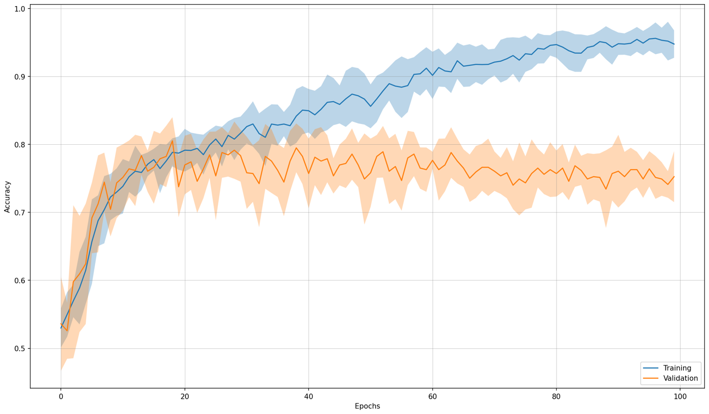
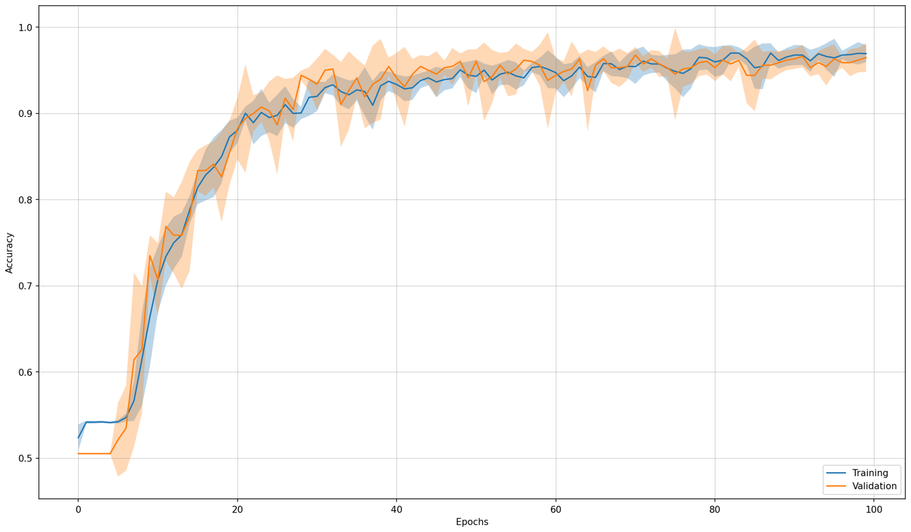

Two-electrode EEG classification with a CNN-LSTM
A deep learning model that classifies resting-state EEG from two electrodes instead of nineteen, as a first step towards a cheaper and simpler EEG device. We found the pair by ranking every electrode on its own, then tuned a CNN-LSTM to work with just those two.
- Team
- Two people, work shared equally with Marlene Antunes
- Data
- Public resting-state EEG, 28 subjects, 19 channels at 250 Hz
- Electrodes used
- 2, T4 and T3
- Model
- Convolution layers with squeeze-and-excite, two LSTM layers
- Validation accuracy
- 96.0%, mean of 10 runs
- Test set
- 94.5% accuracy, AUC 0.98
- Tools
- Python, TensorFlow with Keras, Keras Tuner, MNE, DTU computing cluster
Context
EEG caps are costly and need expert knowledge to fit, which limits how widely they are used. Marlene Antunes and I wanted to know how far a deep learning model gets when it only sees two electrodes, as a first step towards a cheap and easy-to-use EEG device. We used a public resting-state dataset from the Institute of Psychiatry and Neurology in Warsaw with 14 people with schizophrenia and 14 healthy controls, each recorded on 19 channels at 250 Hz, and trained the model to tell the two groups apart.
Choosing two electrodes
Each recording is re-referenced to the average of all channels, bandpass filtered from 0.5 to 45 Hz and cut into 25-second segments of 6,250 samples, which gives 1,142 segments. The segments are then z-scored with statistics from the training data.
There is no agreed best way to choose EEG channels, so we let a model decide (Figure 2). We took a CNN-LSTM from the literature (Shoeibi et al.) as a reference, trained it on each of the 19 electrodes on its own and ranked them by accuracy. Nine electrodes stayed at chance level. T4 and T3, over the right and left temporal lobes, came out on top at 65.9% and 65.7%, so we kept that pair (Figure 1).
Tuning the model
Trained on T4 and T3 alone, the reference model overfit and its validation accuracy stalled at about 75%. We tuned it in two stages on DTU's computing cluster. A Bayesian search with Keras Tuner set the kernel sizes, LSTM units, dense layer sizes and learning rate, and we then changed the layers by hand.
The final model (Figure 3) splits each segment into ten 2.5-second windows. Two convolution layers with much wider kernels than the reference, 120 and 80 samples instead of 3, and a squeeze-and-excite block extract features from the windows. Two LSTM layers of 256 units then model how those features change over the 25 seconds.
Results
With only T4 and T3, the tuned model reached 96.0% validation accuracy, averaged over 10 runs, and 94.5% accuracy on a held-out test set, with 95.5% precision, 95.5% recall and an AUC of 0.98. Where the reference model overfit, the tuned model's training and validation curves stay together (Figure 4). The tuning also lifted every single electrode, which now scores between 65% and 84% on its own. Segments were split at random rather than per person, so these numbers are optimistic.

Reference model on T4 and T3

Tuned model on T4 and T3
Recording our own EEG
To learn the acquisition side as well, we recorded five minutes of resting-state EEG from ourselves with a 16-channel OpenBCI Ultracortex Mark IV headset at 250 Hz and filtered it into the standard frequency bands with a 50 Hz notch. These recordings were for practice and were not used to train the model.
The training script is on GitHub, as it was used in the project.